| Integrante | Matrícula |
|---|---|
| Jezel Pujols | 2025-2067 |
| Rebeca Mary Astacio Bryan | 2025-2264 |
Para quien instala, configura, mantiene o prueba el sistema.
Pulso es una aplicación web progresiva (PWA) que reemplaza la libreta de papel en la que una persona con hipertensión o diabetes tipo 2 anota sus medicamentos y sus mediciones. Está construida con React y TypeScript, y guarda los datos en Supabase (PostgreSQL + autenticación) con seguridad por fila: cada usuario solo puede ver y modificar sus propios datos. También funciona sin conexión gracias a una copia local que se sincroniza sola.
| Módulo | Funcionalidad | Tablas |
|---|---|---|
| Usuarios y sesión | Crear cuenta, iniciar y cerrar sesión, cambiar contraseña, eliminar cuenta | auth.users |
| Perfil | Nombre, condiciones, contacto de emergencia y rangos objetivo del médico | perfil, condicion, rangos_objetivo, preferencias |
| Medicamentos y dosis | Medicamentos con horarios, marcar dosis tomada u omitida, adherencia | medicamento, horario, registro_dosis |
| Mediciones | Presión, glucosa y peso, clasificados contra el rango del médico; historial | medicion |
| Citas e informe | Citas con exportación al calendario e informe A4 para el médico | cita |
| Requisito | Versión | Para qué |
|---|---|---|
| Node.js | 20 o superior (probado con 24.16) | Ejecutar Vite, las pruebas y la CLI de Supabase |
| npm | 10 o superior | Instalar las dependencias |
| Git | cualquiera reciente | Clonar el repositorio |
| Navegador | Chrome, Edge, Firefox o Safari actuales | Usar la aplicación |
| Cuenta de Supabase | plan gratuito | Base de datos y autenticación (opcional: sin ella funciona en modo local) |
| Chrome o Edge instalado | — | Solo para las herramientas de capturas y auditoría (puppeteer-core) |
git clone https://github.com/ImJezel/pulso.git
cd pulso
npm installnpm install descarga todas las librerías listadas en package.json, incluida la CLI de Supabase como dependencia de desarrollo (se usa con npx supabase, sin instalarla aparte).
cp .env.example .env.local.env.local la Project URL y la clave publishable (o anon).npx supabase login # abre el navegador para autorizar la CLI
npx supabase link --project-ref TU_PROJECT_REF
npx supabase db push # crea las 9 tablas, RLS y la función eliminar_mi_cuenta
npx supabase config push # sin confirmación por correo, contraseña de 8+ caracteressupabase/migrations/20261027010000_esquema_inicial.sql en el SQL Editor de Supabase y ejecútalo. Luego, en Authentication → Sign In / Providers → Email, desactiva Confirm email.npm run dev # abre http://localhost:5173 → debe aparecer la pantalla «Entra a Pulso»
npm test # debe terminar con «84 passed»| Librería | Versión | Uso en Pulso |
|---|---|---|
| @supabase/supabase-js | 2.118 | Cliente de la base de datos y de la autenticación |
| react / react-dom | 19.2 | Interfaz de usuario por componentes |
| react-router-dom | 7.18 | Navegación entre pantallas (HashRouter) |
| recharts | 3.10 | Gráfico de tendencia del historial |
| date-fns | 4.4 | Fechas en español dominicano |
| lucide-react | 1.33 | Íconos |
| Herramienta | Versión | Uso |
|---|---|---|
| vite | 8.2 | Servidor de desarrollo y build de producción |
| typescript | 6.0 | Tipado estricto del código |
| tailwindcss + @tailwindcss/vite | 4.3 | Estilos con los tokens del sistema de diseño |
| vite-plugin-pwa | 1.3 | Service worker: instalable y sin conexión |
| vite-plugin-singlefile | 2.3 | Build de un solo archivo HTML |
| supabase (CLI) | 2.115 | Migraciones, configuración y tipos de la base de datos |
| vitest + @testing-library/react + jsdom | 4.1 / 16.3 / 30.0 | Pruebas unitarias y de integración |
| oxlint | 1.79 | Análisis estático (lint) |
| puppeteer-core + axe-core | 25.8 / 4.13 | Capturas, recorrido de usuario y auditoría de accesibilidad |
.env.local)| Variable | Ejemplo | Descripción |
|---|---|---|
| VITE_SUPABASE_URL | https://xxxx.supabase.co | URL del proyecto de Supabase |
| VITE_SUPABASE_ANON_KEY | sb_publishable_… | Clave pública. Es segura en el navegador: los datos los protege Row Level Security |
| SUPABASE_DB_PASSWORD | (contraseña) | Solo para la CLI (db push). Nunca se usa en el navegador |
.env.local está en .gitignore y nunca se sube al repositorio. Si las dos variables VITE_ están vacías, Pulso arranca en modo local: sin cuentas y con los datos solo en el navegador.El esquema vive en supabase/migrations/ y traduce el modelo relacional del Entregable 2. Son 9 tablas en el esquema public:
| Tabla | Columnas principales | Cardinalidad |
|---|---|---|
| perfil | id_perfil (PK = auth.uid()), nombre, fecha_nacimiento, contacto_nombre, contacto_telefono, datos_demo, version_esquema | 1 por usuario |
| rangos_objetivo | id_perfil (PK, FK→perfil), sis_min/max, dia_min/max, ayunas_min/max, post_min/max, peso_min/max | 0..1 por perfil |
| preferencias | id_perfil (PK, FK→auth.users), escala_texto, alto_contraste, modo_simple | 1 por usuario |
| condicion | (id_perfil, codigo) PK, orden | N por perfil |
| medicamento | (id_perfil, id_medicamento) PK, nombre, dosis, instruccion, activo, creado_en | N por perfil |
| horario | (id_perfil, id_medicamento, hora) PK, orden · FK→medicamento ON DELETE CASCADE | N por medicamento |
| registro_dosis | (id_perfil, id_registro) PK, id_medicamento (FK), fecha_hora_programada, estado, registrado_en | N por medicamento |
| medicion | (id_perfil, id_medicion) PK, tipo, fecha_hora, sistolica, diastolica, pulso, glucosa, contexto, peso, nota | N por perfil |
| cita | (id_perfil, id_cita) PK, medico, especialidad, fecha_hora, lugar, motivo | N por perfil |
id_perfil = auth.uid().anon (sin sesión) no tiene ningún permiso sobre las tablas.id_perfil: un usuario no puede colgar datos de los de otro.eliminar_mi_cuenta() es una función SECURITY DEFINER que solo borra al usuario que la llama; el borrado arrastra todos sus datos (ON DELETE CASCADE).create policy "solo el dueño" on public.<tabla> for all to authenticated
using ((select auth.uid()) = id_perfil)
with check ((select auth.uid()) = id_perfil);supabase/config.toml)Correo y contraseña, sin confirmación por correo (enable_confirmations = false), contraseña mínima de 8 caracteres y URL del sitio http://localhost:5173.
npx supabase migration new nombre_del_cambio # crea un .sql nuevo en supabase/migrations
npm run db:push # lo aplica al proyecto enlazado
npm run db:tipos # regenera src/types/supabase.tsPulso es un monolito del lado del cliente organizado en capas, con Supabase como servicio gestionado de base de datos y autenticación. Cada capa solo depende de la de abajo:
src/pages, src/components. React, react-router-dom, Tailwind con tokens, lucide-react, Recharts.src/context. AppContext (useReducer, Deshacer, anuncios accesibles), SesionContext (Supabase Auth) y useSincronizacion (cola de cambios sin conexión).src/lib. Funciones puras probadas sin red: rangos, adherencia, fechas, validaciones, ics, demo.src/lib/storage.ts (copia local por usuario en localStorage) y src/lib/remoto.ts (traducción a las 9 tablas y consultas a Supabase).Las pantallas trabajan con un único objeto EstadoPulso y no saben que existe una base de datos. Añadir Supabase no obligó a cambiar las pantallas de datos.
AppContext actualiza el estado y la pantalla cambia al instante.localStorage, una clave por cuenta).useSincronizacion compara el estado con lo último que el servidor confirmó (calcularCambios) y envía solo la diferencia (aplicarCambios).cargarRemoto), para no pisar cambios hechos sin conexión.pulso/
├── index.html · package.json · vite.config.ts · project.config.json
├── .env.example plantilla de variables de entorno
├── supabase/
│ ├── config.toml configuración de Auth
│ └── migrations/ esquema de la base de datos (SQL)
├── src/
│ ├── main.tsx punto de entrada y service worker
│ ├── App.tsx sesión → datos del usuario → rutas
│ ├── types/ index.ts (modelo) · supabase.ts (tipos generados)
│ ├── context/ AppContext · SesionContext · useSincronizacion
│ ├── lib/ supabase · remoto · storage · rangos · adherencia
│ │ fechas · validaciones · ics · demo · calidadISO
│ ├── components/ 10 componentes accesibles reutilizables
│ ├── pages/ una por pantalla
│ └── styles/tokens.css sistema de diseño
├── tests/ pruebas unitarias
│ └── integracion/ pruebas contra Supabase real
├── scripts/ capturas, recorrido de usuario, auditoría axe
├── evidencias/ logs y reporte de pruebas (Entregable 4)
└── manual/ este manual y sus capturas| Ruta | Archivo (src/pages) | Qué resuelve |
|---|---|---|
| /entrar | Entrar.tsx | Iniciar sesión o crear una cuenta |
| /bienvenida | Bienvenida.tsx | Configuración inicial en 3 pasos |
| / | Hoy.tsx | Dosis del día, cinta del día, última medición y próxima cita |
| /registrar | Registrar.tsx | Registrar presión, glucosa o peso |
| /medicamentos | Medicamentos.tsx | Alta, edición, desactivación y borrado |
| /historial | Historial.tsx | Gráfico de tendencia, resumen y tabla |
| /citas | Citas.tsx | Citas próximas y pasadas, exportar al calendario |
| /informe | Informe.tsx | Informe A4 para el médico |
| /ajustes | Ajustes.tsx | Accesibilidad, perfil, cuenta y datos |
| Comando | Qué hace |
|---|---|
npm run dev | Servidor de desarrollo con Supabase en http://localhost:5173 |
npm run dev:local | Servidor de desarrollo sin cuentas (modo local), útil para demos sin internet |
npm run build | Build de producción (PWA instalable) en dist/ |
npm run preview | Sirve el build de producción en http://localhost:4173 |
npm run build:unico | Un solo index.html que abre con doble clic, en modo local |
npm run lint | Análisis estático con oxlint |
Para ver la aplicación con datos sin escribir nada: entra, completa la bienvenida y ve a Ajustes → Cargar datos de ejemplo.
npm test| Archivo | Pruebas | Qué comprueba |
|---|---|---|
tests/rangos.test.ts | 10 | Clasificación de una medición contra los rangos del médico |
tests/adherencia.test.ts | 11 | Dosis del día, porcentaje de cumplimiento y cinta del día |
tests/fechas.test.ts | 11 | Formatos en español dominicano, edad y exportación .ics |
tests/storage.test.ts | 12 | Copia local, JSON corrupto y reducer del estado |
tests/remoto.test.ts | 18 | Traducción estado ⇄ tablas y cálculo exacto de cambios |
tests/sincronizacion.test.tsx | 9 | Orden de la sincronización y modo sin conexión (Supabase simulado) |
tests/validaciones.test.ts | 13 | Validación de formularios con rangos fisiológicos y fechas |
Resultado esperado:
Test Files 7 passed | 1 skipped (8)
Tests 84 passed | 6 skipped (90)Las 6 «skipped» son las de integración, que no corren con npm test porque necesitan red.
npm run test:integracionRequisitos: .env.local configurado, el proyecto de Supabase activo y la confirmación de correo desactivada. Crean dos usuarios de prueba, verifican el guardado completo, el envío de solo diferencias, la idempotencia y que RLS impide que un usuario vea, cambie o borre datos de otro; al terminar eliminan ambos usuarios.
npx tsc -p tsconfig.app.json --noEmit # tipos (0 errores)
npm run lint # estilo y errores comunes
# con «npm run dev:local» corriendo en otra terminal:
npm run recorrido # recorre la app como un usuario nuevo
npm run axe # auditoría de accesibilidad WCAG
node scripts/capturas-manual.mjs # regenera las capturas de este manual| Síntoma | Causa | Solución |
|---|---|---|
getaddrinfo ENOTFOUND xxxx.supabase.co o error 521 | El plan gratis pausa el proyecto tras 7 días sin uso | En el panel de Supabase, abrir el proyecto y pulsar Restore; esperar unos minutos |
| Al crear cuenta dice «Te enviamos un correo…» | La confirmación por correo está activada | npx supabase config push o desactivar Confirm email en el panel |
| La app no pide cuenta | Variables vacías o se usó dev:local | Revisar .env.local y usar npm run dev |
Port 5173 is already in use | Otro servidor en ese puerto | Cerrarlo o usar npm run dev -- --port 5180 |
| «No se pudieron guardar tus cambios en tu cuenta» | El servidor rechazó un cambio | Ajustes → Tu cuenta muestra el detalle técnico y el botón «Reintentar ahora» |
Para el paciente, su familia o quien le ayuda a usar Pulso.
Pulso es tu libreta de salud en el teléfono. Si tienes hipertensión o diabetes, te ayuda a:
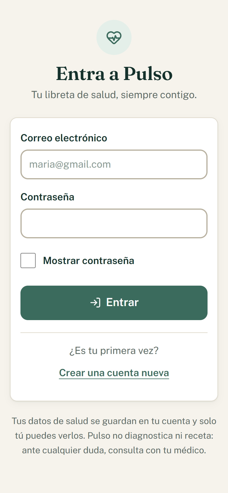
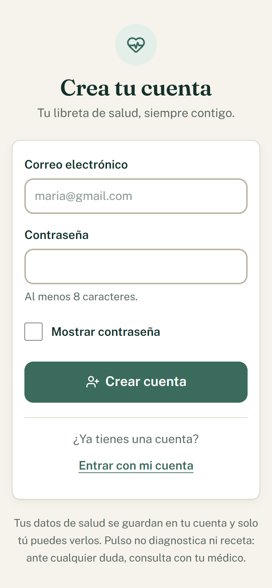
Si algo está mal escrito, Pulso te lo dice debajo del campo con un triángulo ▲ y te explica cómo corregirlo.
La primera vez, Pulso te hace tres preguntas. Siempre puedes volver con «Atrás».
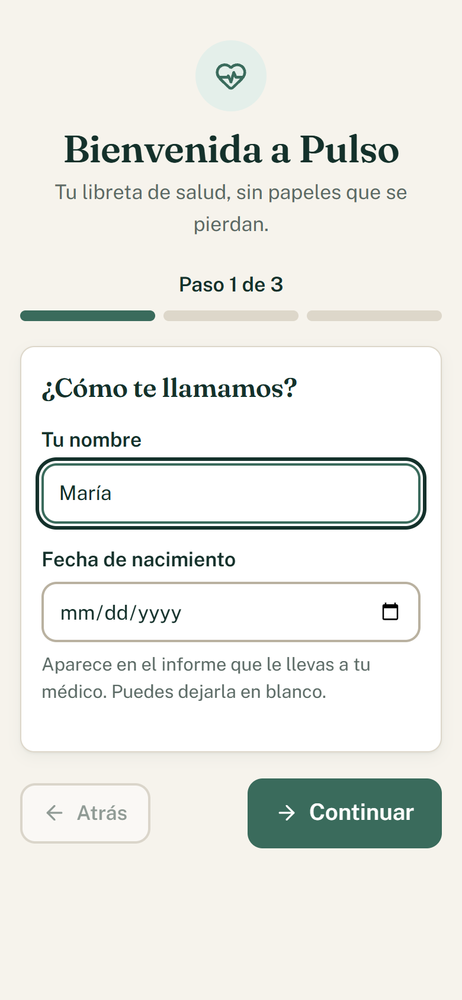
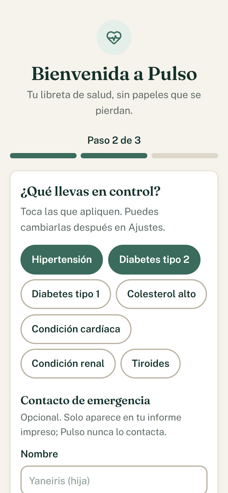
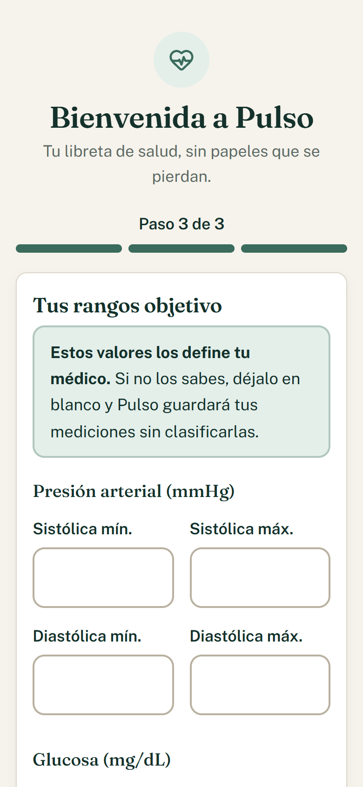
Es la pantalla principal. Arriba te saluda por tu nombre y debajo tienes:
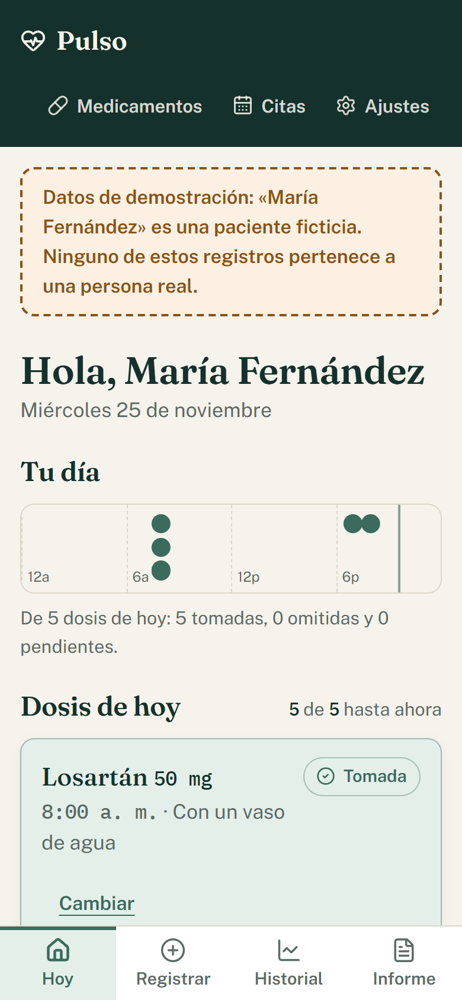
Abajo siempre está la barra con Hoy · Registrar · Historial · Informe, y arriba Medicamentos · Citas · Ajustes.
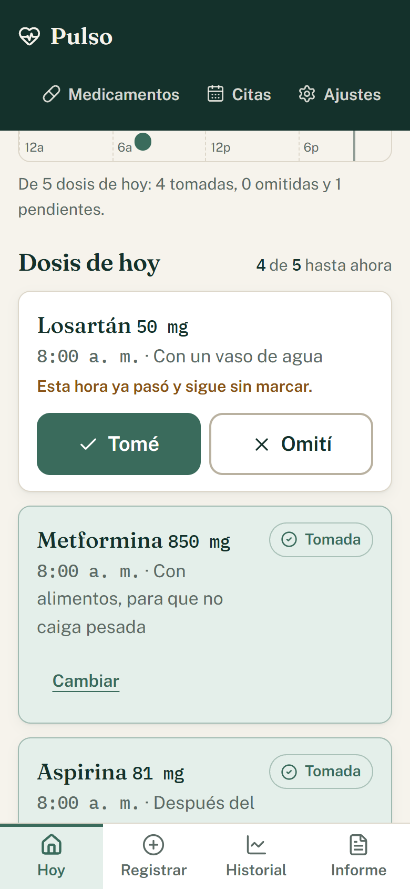
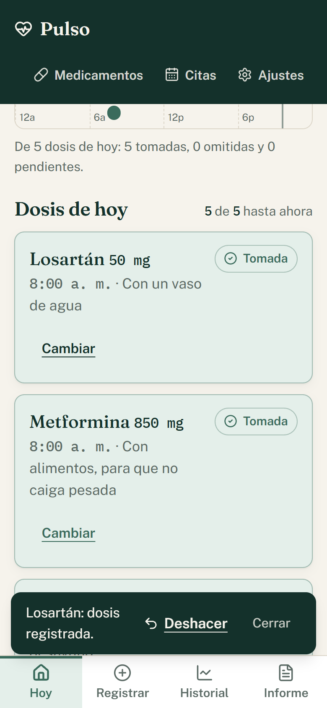
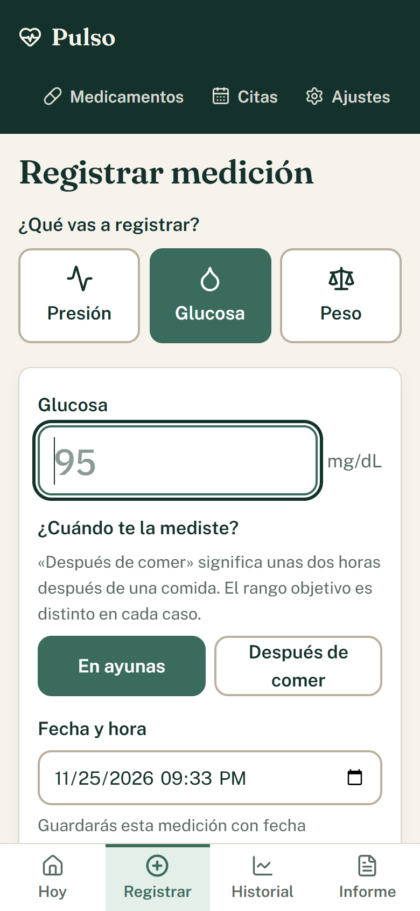
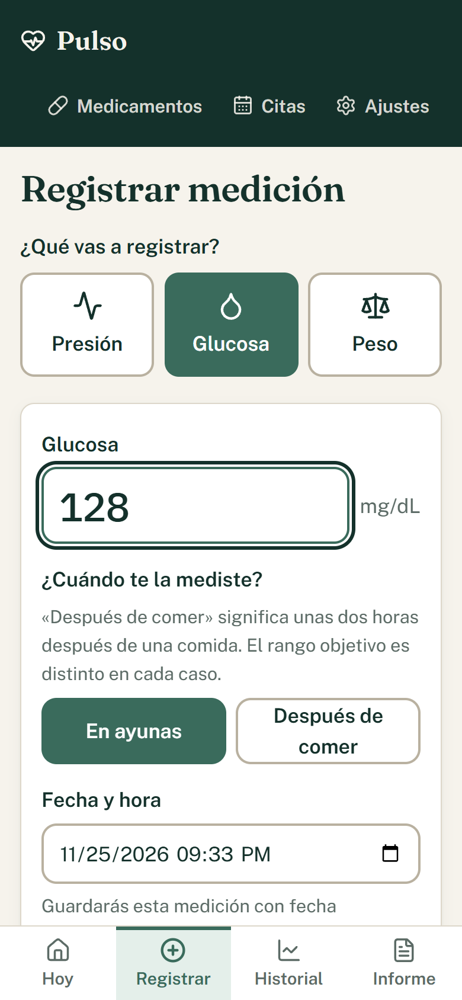
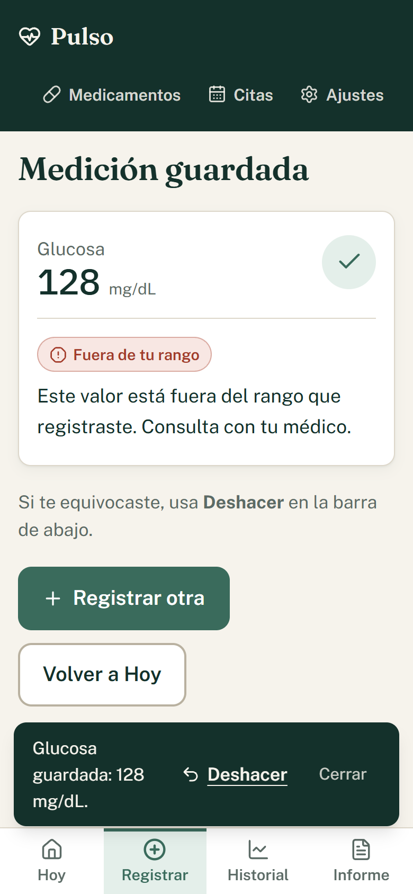
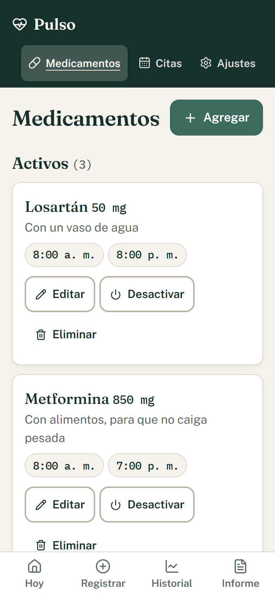
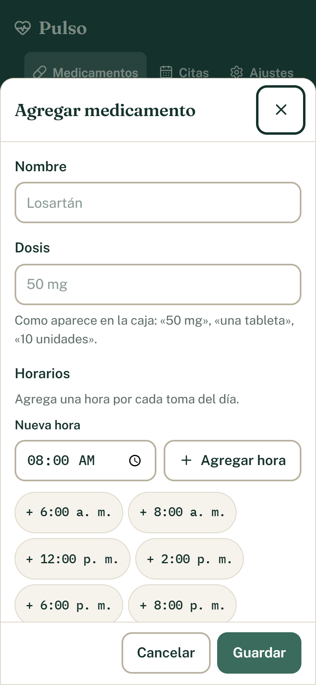
Si dejas de tomar un medicamento, usa «Desactivar»: se conserva su historial. «Eliminar» lo borra con todos sus registros y te pide confirmar.
En Historial eliges el tipo de medición y el período (7, 30 o 90 días). El gráfico muestra tu tendencia con una franja verde que es el rango de tu médico, y debajo un resumen y la tabla de todas las mediciones.
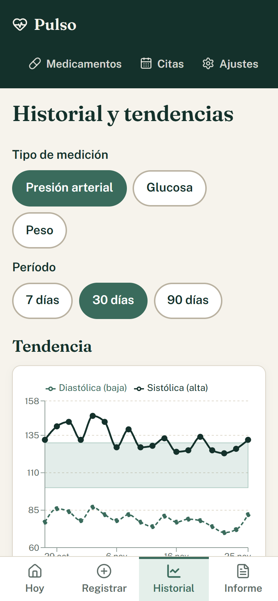
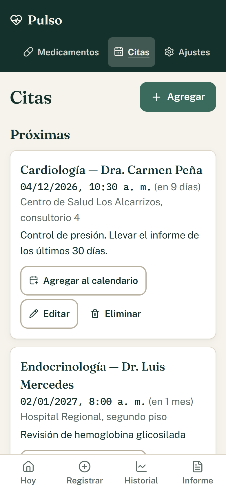
En Citas toca «Agregar» para anotar médico, especialidad, fecha, lugar y motivo. Con «Agregar al calendario» la cita pasa al calendario de tu teléfono.
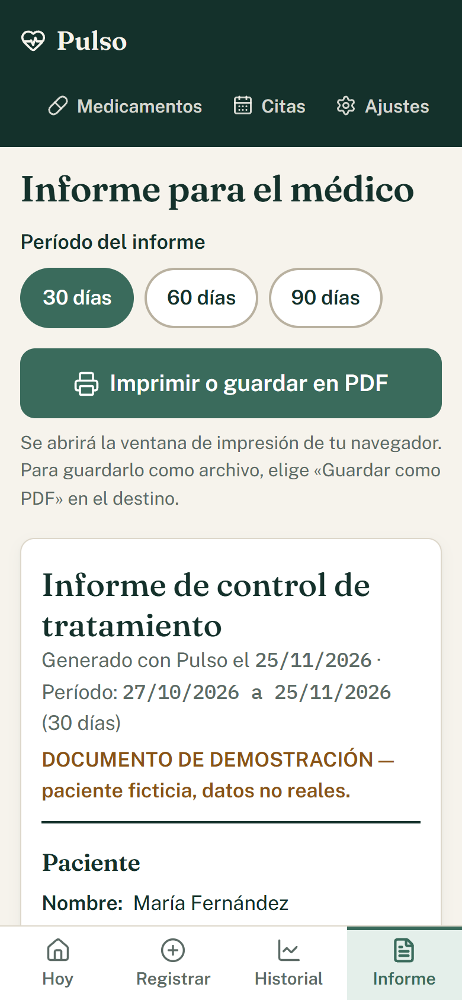
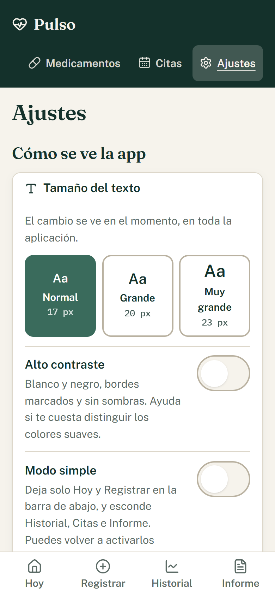
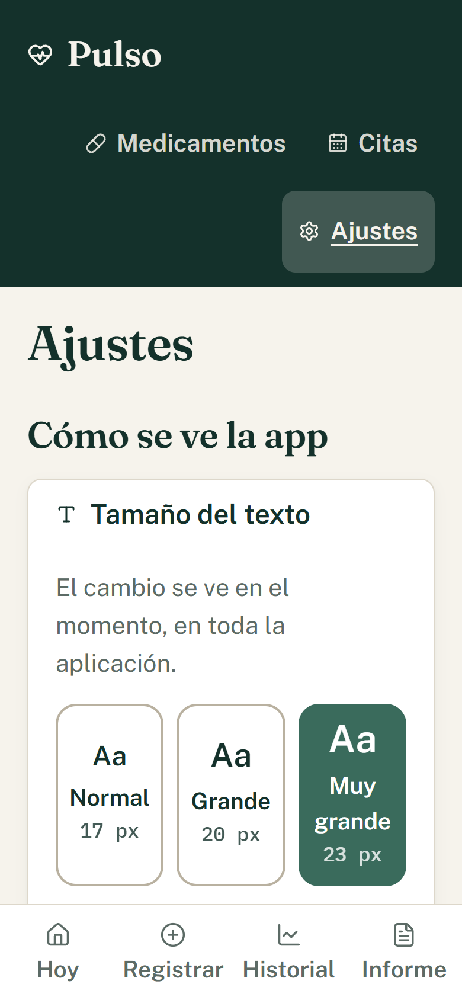
A las 8:05 abre Pulso. En Hoy ve «Losartán 50 mg · 8:00 a. m. · Con un vaso de agua» y el círculo vacío en la cinta. Toca «Tomé»: la tarjeta dice «Tomada» y el punto de las 8 se pone verde. Resultado: la dosis queda registrada con la hora real y cuenta para su adherencia del mes.
Después de almorzar se mide 128 mg/dL. Toca Registrar → Glucosa, escribe 128, marca «Después de comer» y toca «Guardar medición»: tres toques. Pulso le muestra si está dentro del rango que le dio su médico. Resultado: la medición aparece en Hoy y en el Historial.
El médico le receta Metformina 850 mg a las 8:00 a. m. y 7:00 p. m. En Medicamentos → Agregar escribe el nombre y la dosis, agrega las dos horas y guarda. Resultado: desde hoy las dos tomas aparecen en la pantalla Hoy y en la cinta del día.
Un día antes de la cita, abre Informe, elige 90 días y toca «Imprimir o guardar en PDF». Lo guarda como PDF y se lo envía al médico. Resultado: el médico ve en una hoja la adherencia, las tendencias y los valores fuera de rango, en lugar de una libreta incompleta.
Doña Altagracia marca sus dosis sin señal. Pulso muestra con calma: «Sin conexión. Lo que registres se guarda en este dispositivo y se sube solo a tu cuenta cuando vuelva el internet.» Resultado: no se pierde nada; al volver la señal, todo se sube solo.
| Pregunta | Respuesta |
|---|---|
| ¿Quién puede ver mis datos? | Solo tú, con tu cuenta. La base de datos impide que otra cuenta los vea. |
| ¿Me equivoqué al marcar una dosis? | Toca «Deshacer» en los 8 segundos siguientes, o «Cambiar» en la tarjeta de la dosis. |
| ¿Qué pasa si no sé mis rangos? | Déjalos en blanco. Pulso guarda tus mediciones sin colorearlas hasta que los pongas en Ajustes. |
| ¿Puedo usarlo en dos teléfonos? | Sí. Entra con la misma cuenta y tus datos se sincronizan. |
| ¿Cómo dejo de usar Pulso? | Ajustes → Tu cuenta → Eliminar mi cuenta. Se borran tu cuenta y todos tus datos. |
| ¿Olvidé mi contraseña? | Por ahora Pulso no envía correos de recuperación. Pide al administrador del sistema que restablezca tu acceso. |